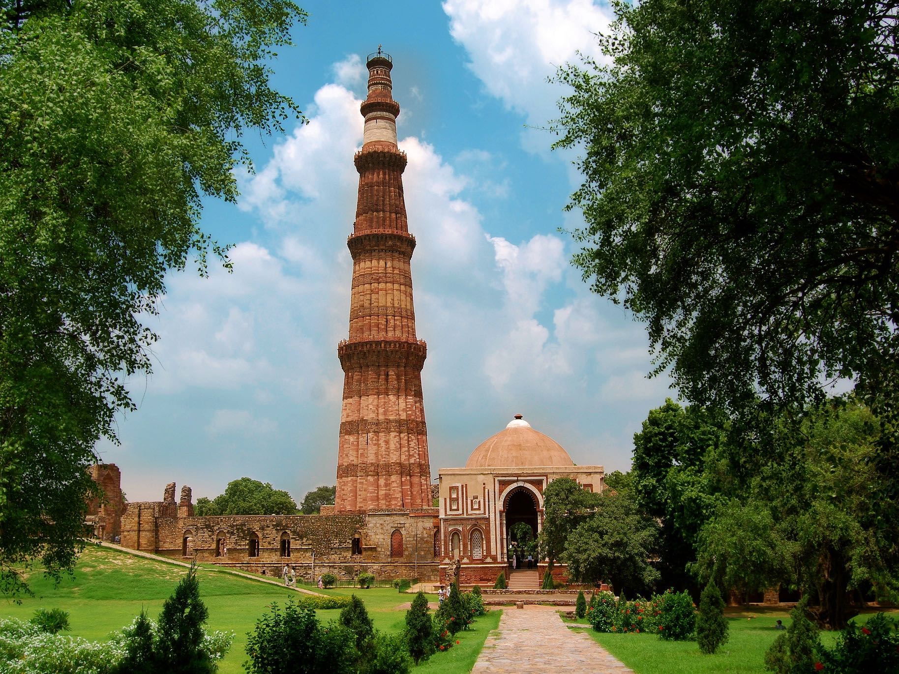
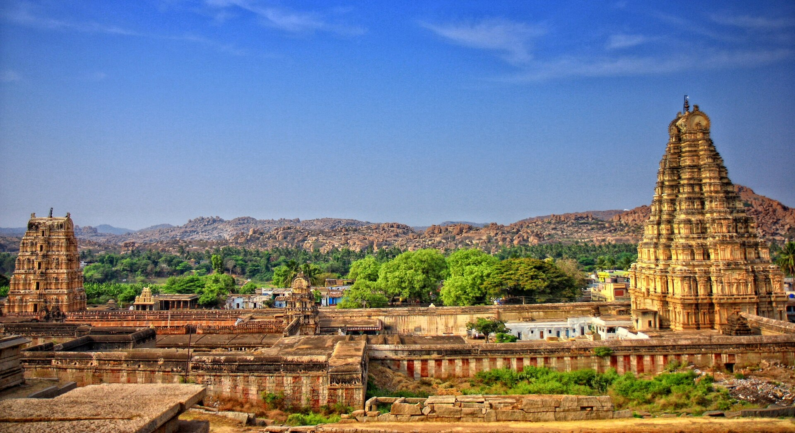

Taj Mahal (Agra)
ㅤㅤㅤㅤㅤ

The Taj Mahal is one of the most famous monuments in the world, built by Mughal Emperor Shah Jahan in memory of his wife Mumtaz Mahal.
It stands on the banks of the Yamuna River and is considered one of the greatest symbols of love.
This UNESCO World Heritage Site is admired for its intricate Persian, Islamic, and Indian architectural influences.
Qutub Minar (Delhi)

The Qutub Minar is the tallest brick minaret in the world, standing 73 meters tall.
Built in the 12th century, it marks the start of Muslim rule in India.
The complex also includes ancient mosques and the famous Iron Pillar, which hasn’t rusted in over 1,600 years.
Statue of Unity
ㅤㅤ
The Statue of Unity is the world's tallest statue, with a height of 182 metres (597 feet), near Kevadia in the state of Gujarat, India.
It depicts Indian politician and independence activist Sardar Patel (1875–1950), who was the first deputy prime minister and home minister of independent India and an adherent of Mahatma Gandhi. Patel played a significant role in the political integration of India.
The statue is on the Narmada River in the Kevadiya colony, facing the Sardar Sarovar Dam 100 kilometres (62 miles) southeast of the city of Vadodara
Hampi (Karnataka)
ㅤㅤ

Hampi, is a UNESCO World Heritage Site located in the town of Hampi in Vijayanagara district, east-central Karnataka, India.
Hampi predates the Vijayanagara Empire; it is mentioned in the Ramayana and the Puranas of Hinduism as Pampa Devi Tirtha Kshetra.
Hampi continues as a religious centre, with the Virupaksha Temple, an active Adi Shankara-linked monastery and various monuments belonging to the old city.
Ellora Caves
ㅤㅤㅤㅤㅤㅤㅤㅤㅤㅤㅤ
The Ellora Caves are a UNESCO World Heritage Site in Sambhaji Nagar, India.
It is one of the largest rock-cut Hindu temple cave complexes in the world, with artwork dating from the period 600–1000 AD,
also including several Buddhist and Jain caves.The complex is a leading example of Indian rock-cut architecture, and several are not strictly "caves" in that they have no roof.
Cave 16 features the largest single monolithic rock excavation in the world, the Kailash temple, a chariot-shaped monument dedicated to the god Shiva. The Kailash temple excavation
also features sculptures depicting various Hindu deities as well as relief panels summarizing the two major Hindu epics.